All-In1 Travel
All-In1 Travel es la centralización de todas tus reservas relacionadas con los viajes, desde el destino, hasta el alojamiento, vuelo y actividades que desees realizar. Para la realización de este prototipo he usado la metodología Design Thinking.
El problema
Muchos usuarios a la hora de planificar un viaje buscan poder reservar actividades al mismo tiempo que el vuelo o el alojamiento. Sin embargo, suelen verse obligados a gestionarlas por separado, utilizando diferentes aplicaciones o incluso reservándolas físicamente una vez en el destino. Esto convierte el proceso de planificación en una tarea más estresante y menos eficiente, afectando así negativamente la experiencia de viajar, que debería ser memorable.
Primera fase: Observar
Buscando un poco de información en Internet se puede llegar rápidamente a la conclusión de que hoy en día es mucho más habitual reservar viajes directamente desde dispositivos móviles en lugar de hacerlo a través de una agencia. Además, en foros y reseñas de aplicaciones de este sector se puede observar cierto descontento entre los usuarios debido a la descentralización de sus reservas de viajes. Al realizar una encuesta puede comprobar que este problema es real y que los usuarios valorarían positivamente una aplicación que les permitiera gestionar y centralizar sus reservas en un único lugar.
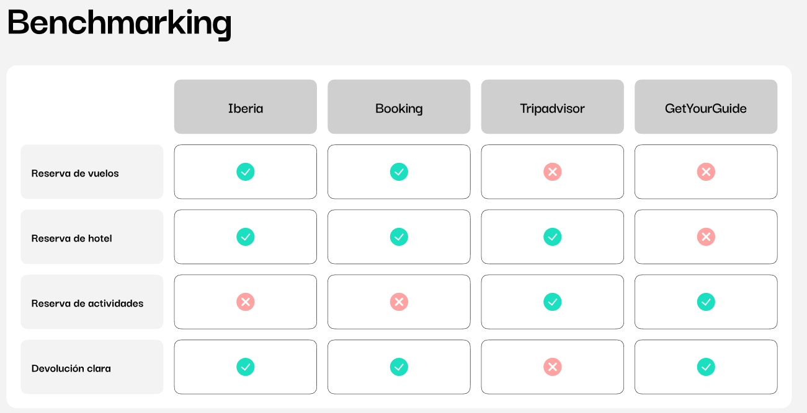
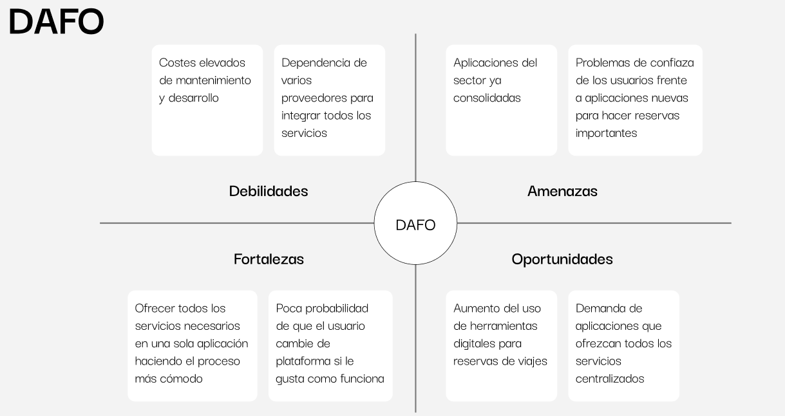
Segunda fase: Sintetizar
Sinteticé dos perfiles diferentes que representan a potenciales usuarios de este producto. Jimena Alonso es una consultora de marketing organizada y eficiente, mientras que Carlos Martínez es un diseñador gráfico más espontáneo y propenso a realizar reservas de última hora.
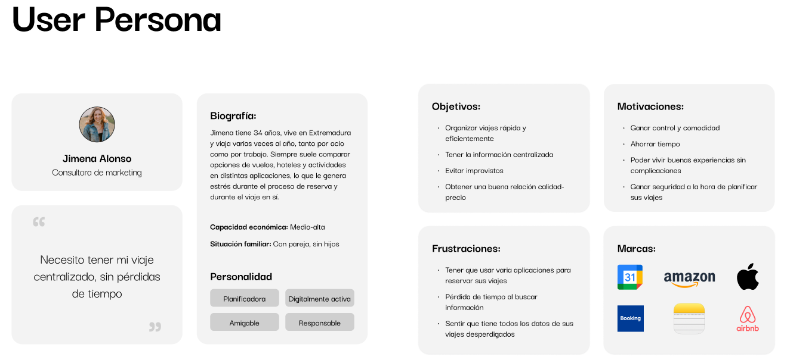
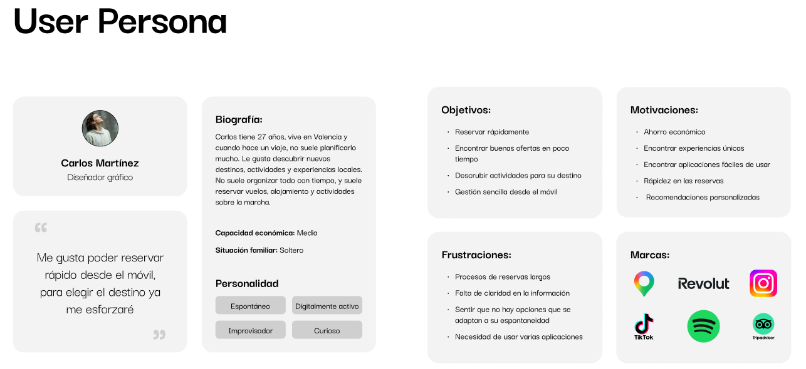
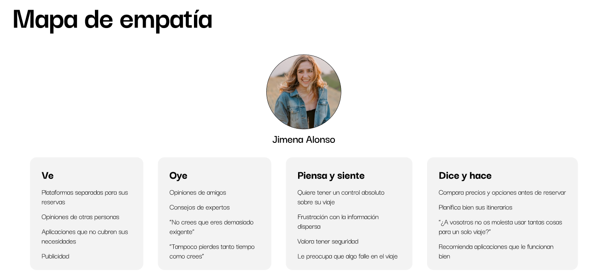
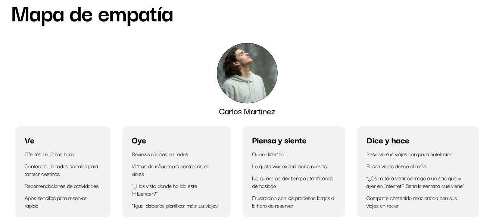
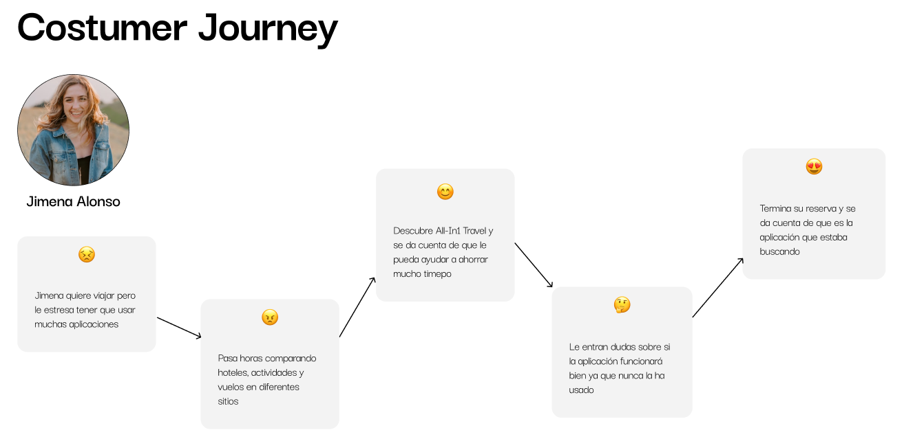
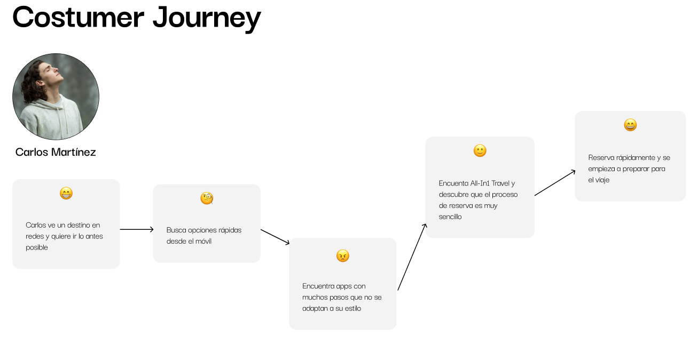
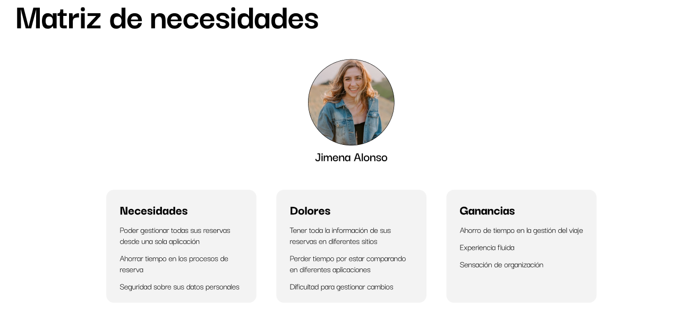
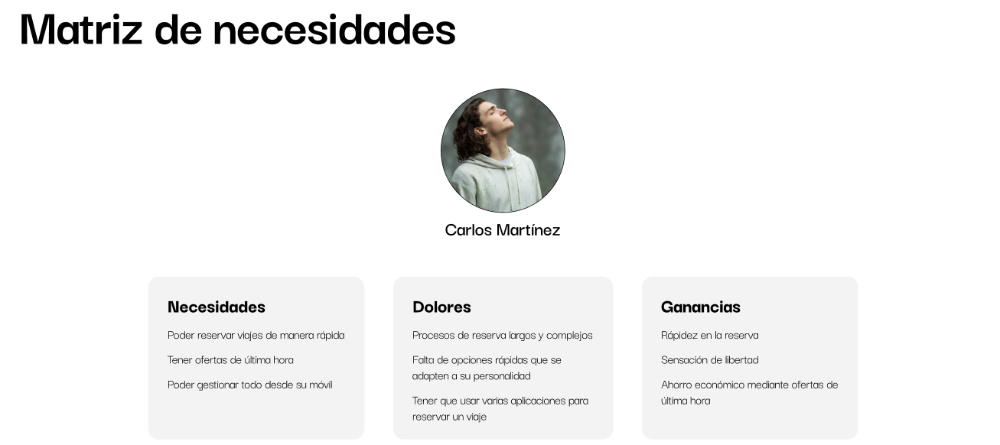
Tercera fase: Idear
En esta fase tuve en cuenta las diferentes desventajas a las que los usuarios se enfrentan al realizar reservas de viajes. A partir de estas necesidades, organicé las funcionalidades que podría incorporar la aplicación según su importancia y viabilidad. Finalmente, definí la propuesta de valor del producto y los factores que habría que tener en cuenta para llevarlo a la realidad.
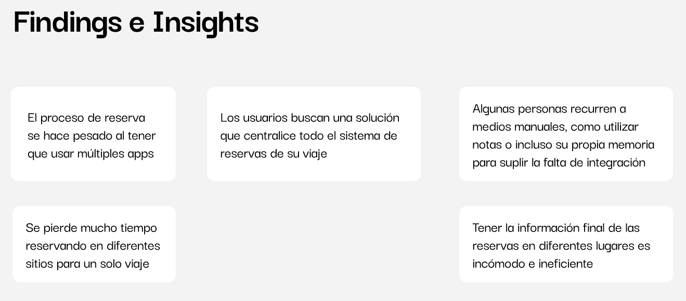
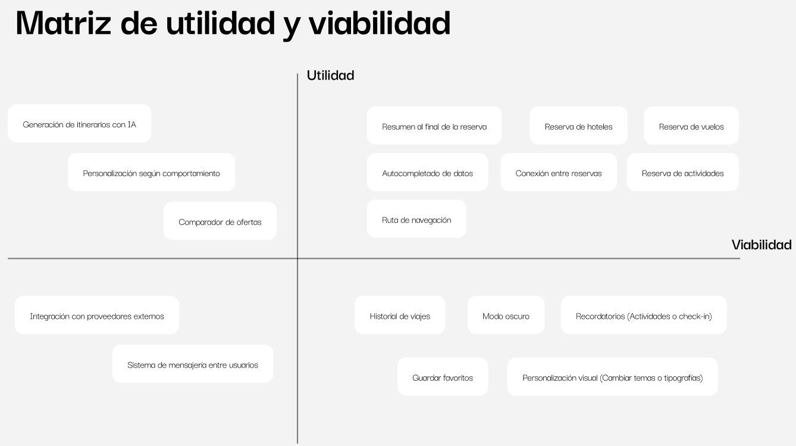
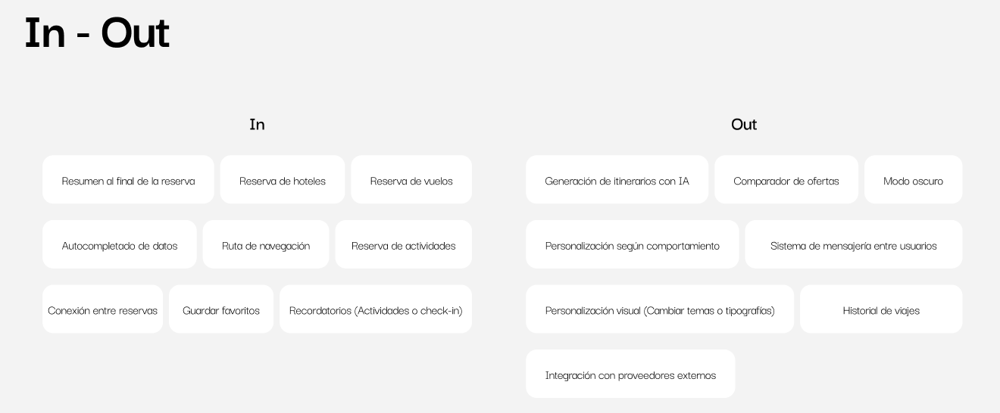
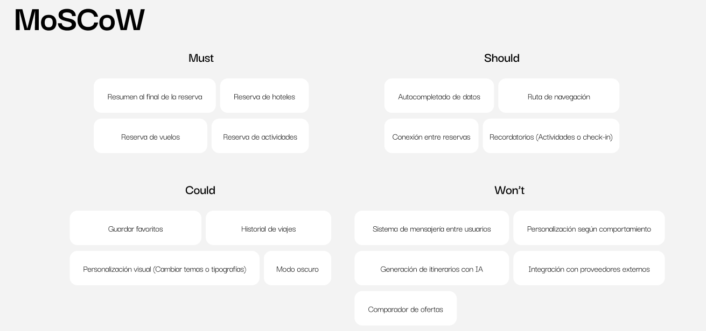
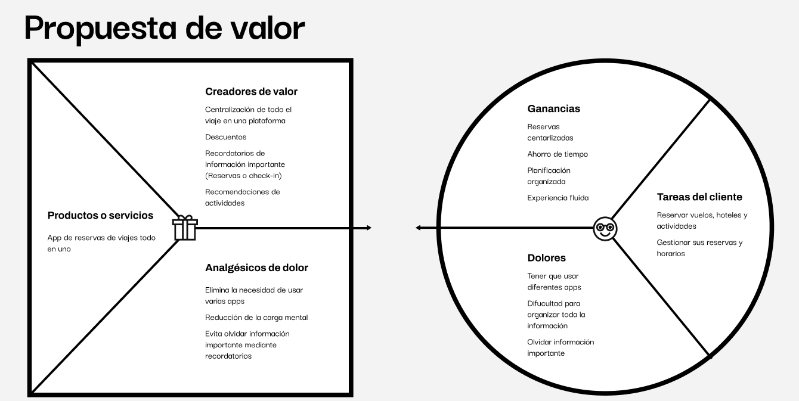
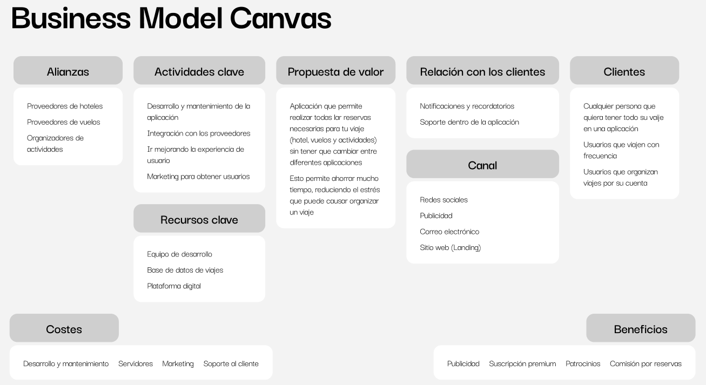
Cuarta fase: Diseñar
Antes de pasar al prototipado, me aseguré de tener una idea clara del producto. Para ello, primero trabajé en la estructuración de la información, definiendo como iba a distribuirse a lo largo de la aplicación. Después, diseñé un flujo que un usuario podría seguir, en este caso, el proceso de cancelación de una reserva. Por último, trabajé en la identidad visual, definiendo los colores y las tipografías, teniendo en cuenta que fueran accesibles para todos los usuarios.
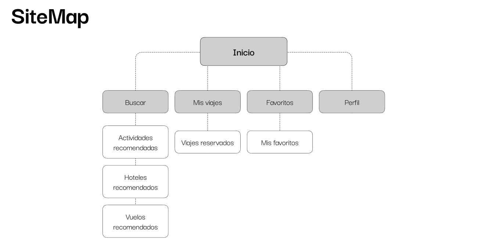
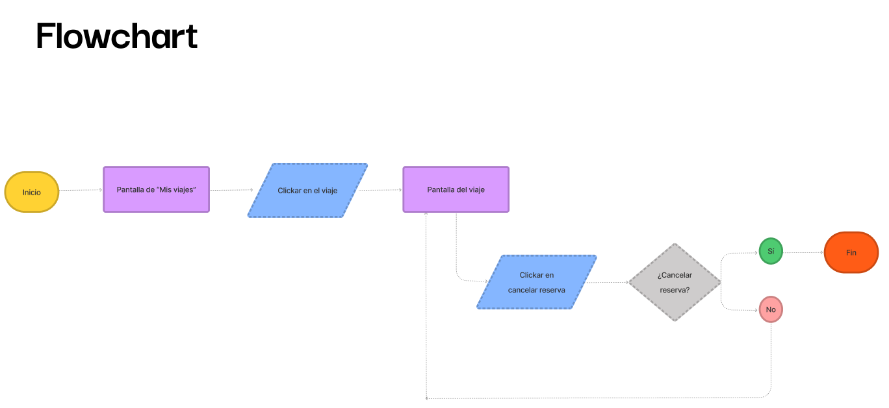
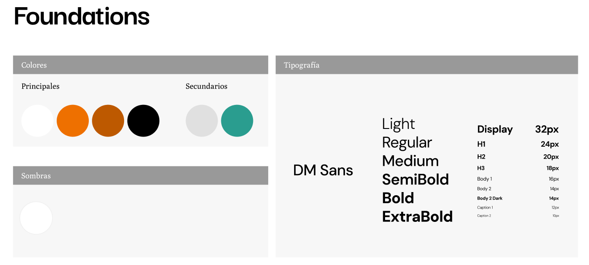
Última fase: El producto
El prototipo representa el flujo principal de la aplicación a través de diferentes pantallas. El usuario comienza en la "splash screen" y, en su primer acceso, pasa por un "onboarding" que explica el propósito de la aplicación. Desde la pantalla de búsqueda puede consultar ofertas recomendadas o realizar una búsqueda. Posteriormente, puede acceder a la pantalla de reserva del servicio seleccionado. Una vez realizada la reserva, puede consultarla desde "Mis viajes", donde también tiene la opción de cancelarla. Además, cuenta con una sección de favoritos en la que puede consultar las ofertas que haya decidido guardar.
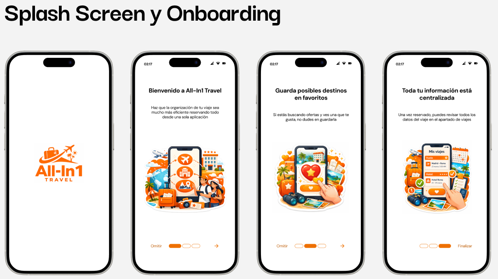
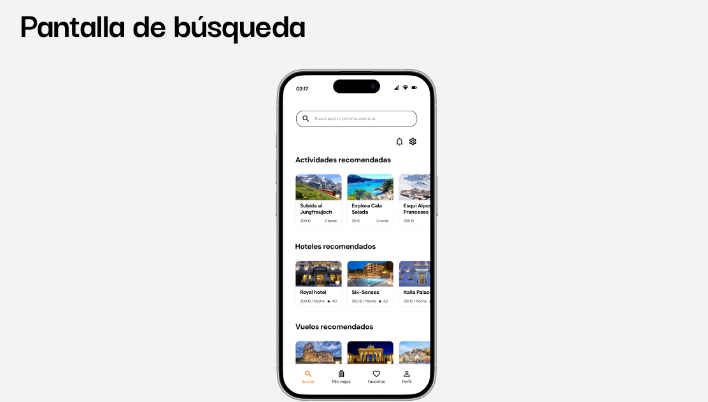